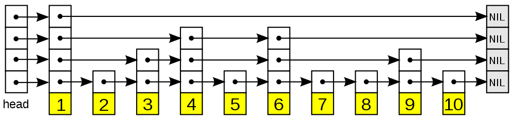

本文主要是《Redis设计与实现》的第一部分的总结，内容为数据结构和对象。这里类比了C++ STL中的数据结构，便于理解。
Redis是使用C语言编写的，C语言本身没有复杂的数据结构。因此Redis自己实现了一套底层的数据结构，这些数据结构作为工具被Redis的其他模块使用。
简单动态字符串 SDS
SDS Simple Dynamic String，和std::string类似。
struct sdshdr {
int len;
int free;
char buf[];
}与C语言字符串相比的优点：
- 常熟复杂度获取字符串长度
- 杜绝缓冲区溢出
- 减少修改字符串长度时所需的内存分配次数
- 二进制安全
- 兼容部分C字符串函数
特性：
- 有长度和容量的概念，存储二进制
- 动态扩容：小于1M，每次Double；大于1M，每次扩1M。
- 惰性释放
链表 LinkedList
LinkedList，这里使用双向链表来实现。然后通过函数指针支持List对象的拷贝、释放和匹配，这样就用C实现了和C++的std::list<T>相同的功能。
// 单个节点的定义
typedef struct listNode {
struct listNode *prev;
struct listNode *next;
void *value;
} listNode;
// list定义
typedef struct list {
listNode *head;
listNode *tail;
unsigned long len;
void *(*dup)(void *ptr); // 复制
void *(*free)(void *ptr); // 释放
void *(*match)(void *ptr, void *key); // 比较
} list;字典 Dict
Redis的字典是Hash表来实现的，相当于std::unordered_map<K, T, cmp> ，并且有更只能的Rehash操作。
// 哈希表
typedef struct dictht {
dictEntry **table; // 哈希表数组
unsigned long size; // 哈希表大小
unsigned long sizemask; // 哈希表大小掩码，用于计算索引值，值为size - 1
unsigned long used; // 该哈希表已有节点数量
} dictht;
// 哈希表的一项
typedef struct dictEntry {
void *key;
union {
void *val;
uint64_t u64;
int64_t s64;
} v;
struct dictEntry *next;
} dictEntry;
// Redis的字典结构
typedef struct dict {
dictType *type; // 类型特定函数，用于实现多态
void *privdata; // 私有数据
dictht ht[2]; // 两个hash表，另一个用于扩容
int rehashidx; // rehash索引，当rehash不在进行时，值为-1
} dict;
// 类型特定函数，对于key和val都实现了拷贝和析构函数，支持key的比较。
typedef struct dictType {
unsigned int (*hashFunction)(const void *key);
void *(*keyDup)(void *privdata, const void *obj);
void *(*valDup)(void *privdata, const void *obj);
void *(*keyCompare)(void *privdata, const void *key1, const void *key2);
void *(*keyDestructor)(void *privdata, void *key);
void *(*valDestructor)(void *privdata, void *obj);
} dictType;特性：
- 多态，支持任意的key和val类型
- 根据负载因子，决定hash表的扩容和缩容。
- load_factor = ht[0].used / ht[0].size
- 缩容：load_factor < 0.1
- 扩容：load_factor ≥ 5
- 渐进式rehash，为了优化rehash的时间，每次只rehash一部分（rehashidx，hash完会加一）。最终将ht[0] rehash到ht[1]。最后ht[1]变成ht[0]，ht[0]释放变成ht[1]，重置rehashidx。
跳跃表 SkipList
跳跃表是一种有序数据结构，它通过在每个节点中维持多个指向其他节点的指针，从而达到快速访问节点的目的。支持平均O(logN)、最坏O(N)复杂度的查找，还可以通过顺序性操作来批量处理节点。
可以直接参考 Redis设计与实现 skiplist章节

typedef struct zskiplistNode {
struct zskiplistNode *backward; // 后退指针
double score; // 分值
robj *obj; // 成员对象
// 层
struct zskiplistLevel {
struct zskiplistNode *forward; // 前进指针
unsigned int span; // 跨度
} level[];
} zskiplistNode;整数集合 IntSet
整数集合(intset)是Redis用于保存整数值的集合抽象数据结构。可以保存类型为int16_t、int32_t、int64_t的整数值，并且保证集合不重复。
typedef struct intset {
uint32_t encoding; // 编码方式
uint32_t length; // 集合包含的元素数量
int8_t contents[]; // 保存元素的数组
} intset;这里encoding表示编码方式，也就是contents里面存的数据的类型。有INTSET_ENC_INT16/INTSET_ENC_INT32/INTSET_ENC_INT64三种。
contents存放具体的数据，并且是有序存储，所以添加一个数字，极端情况下需要挪动所有的数字。
特性：
- 有序数组
- 通过encoding的方式，支持多种整数类型
- 如果整数全都可以用INT16存储，则编码方式即INTSET_ENC_INT16（INT32也相同）。
- 自动升级，如果添加的整数超过之前编码的范围，则整个集合所有的元素的升级。
- 不支持降级，即如果当前编码为INT64，删掉所有int64_t的元素，剩下的全部在int16_t的范围的话集合也不会降级编码方式。
- contents的容量变化使用realloc
压缩列表 ZipList
压缩列表是存储上更节省的一个列表。它是一块紧凑的内存，前面的字节记录了压缩列表的容量等信息，后面跟上每一个具体的数据，每种数据也是按照特定的编码方式组织的。因此相比于链表等数据结构，这里做到了极简。
这里直接粘贴了原文的代码。
ZipList的构成
area |<---- ziplist header ---->|<----------- entries ------------->|<-end->|
size 4 bytes 4 bytes 2 bytes ? ? ? ? 1 byte
+---------+--------+-------+--------+--------+--------+--------+-------+
component | zlbytes | zltail | zllen | entry1 | entry2 | ... | entryN | zlend |
+---------+--------+-------+--------+--------+--------+--------+-------+
^ ^ ^
address | | |
ZIPLIST_ENTRY_HEAD | ZIPLIST_ENTRY_END
|
ZIPLIST_ENTRY_TAIL一个 ziplist 可以包含多个节点，每个节点可以划分为以下几个部分：
area |<------------------- entry -------------------->|
+------------------+----------+--------+---------+
component | pre_entry_length | encoding | length | content |
+------------------+----------+--------+---------+每个Entry的编码有许多的细节，这里就不记录了，感兴趣可以看看原文。
对象
前面介绍了Redis封装的一些基础的数据结构。我们操作Redis的数据结构其实并不是前面提到的。比如LLEN，获取列表的长度，这里的列表其实可能是前面提到的ZipList或者LinkedList。
面向我们用户的数据结构，Redis定义为对象。包含：
- 字符串对象 REDIS_STRING
- 列表对象 REDIS_LIST
- 哈希对象 REDIS_HASH
- 集合对象 REDIS_SET
- 有序集合对象 REDIS_ZSET
Redis对象的定义：
typedef struct redisObject {
unsigned type:4; // 类型，也就是上面的5种对象之一
unsigned encoding:4; // 编码，即使用的底层的存储结构，也就是上面的基础数据结构
void *ptr; // 指向底层实现数据结构的指针
} redisObject;| 类型 | 编码 | 对象 |
|---|---|---|
| REDIS_STRING | REDIS_ENCODING_INT | 使用整数值实现的字符串对象 |
| REDIS_STRING | REDIS_ENCODING_EMBSTR | 使用embstr编码的简单动态字符串实现的字符串对象 |
| REDIS_STRING | REDIS_ENCODING_RAW | 使用简单动态字符串实现的字符串对象 |
| REDIS_LIST | REDIS_ENCODING_ZIPLIST | 使用压缩列表实现的列表对象 |
| REDIS_LIST | REDIS_ENCODING_LINKEDLIST | 使用双端链表实现的列表对象 |
| REDIS_HASH | REDIS_ENCODING_ZIPLIST | 使用压缩列表实现的哈希对象 |
| REDIS_HASH | REDIS_ENCODING_HT | 使用字典实现的哈希对象 |
| REDIS_SET | REDIS_ENCODING_INTSET | 使用整数集合实现的集合对象 |
| REDIS_SET | REDIS_ENCODING_HT | 使用字典实现的整数集合对象 |
| REDIS_ZSET | REDIS_ENCODING_ZIPLIST | 使用压缩列表实现的有序集合对象 |
| REDIS_ZSET | REDIS_ENCODING_SKIPLIST | 使用跳跃表和字典实现的有序集合对象 |
- 字符对象
- INT编码：long可以保存的整数
- EMBSTR：
- 短的字符串
- 短的浮点数，会转换成字符串
- RAW
- long存不下的整数
- 长的浮点数
- 长的字符串
- 列表对象
- ZIPLIST：每一项字符串长度均小于64字节，元素个数小于512个。
- LINKEDLIST：不满足上面的都用双向链表。
- 哈希对象
- ZIPLIST：键值对的长度均小于64字节且数量小于512。
- Key1 Val1 Key2 Val2 ... 的方式存放，每对KV都是连续存放的。
- HT 哈希表：其他情况下用Hash表。
- ZIPLIST：键值对的长度均小于64字节且数量小于512。
- 集合对象
- INTSET：所有元素都是整数且数目小于512
- HT：其他情况
- 有序集合
- 使用Hash表和ziplist或者skiplist实现
- Hash表用于快速查找key对应的元素。
- ziplist/skiplist 用于维护顺序。
- 元素数小于128且元素长度小于64字节时使用ziplist，其他情况使用skiplist。
- 使用Hash表和ziplist或者skiplist实现